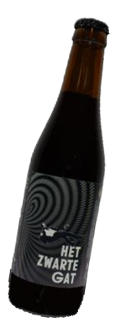

Het Zwarte Gat
Donkere Tripel
Een rijke en complexe donkere tripel met diepe smaken en een warme afdronk. Perfect voor koelere avonden en speciale gelegenheden.
Meer infoBrouwerij Wildebrasse is opgericht door enkele vrienden met eenzelfde passie voor 'betere bieren'. En dat niet alleen aan de toog, maar evenzeer aan de brouwketel.
We b(r)ouwen mee aan onze Belgische biercultuur om deze te vernieuwen, te versterken en te promoten. We gaan voor kleinschalig, ambachtelijk brouwen, ietwat tegen de stroom in. Puur en ongetemd!
Het is onze droom om ooit een eigen kleine brouwerij op te starten.
We ontwikkelen onze bieren in de eigen nano-proefbrouwerij. Eens het recept op punt, gaan we "in het groot" brouwen bij bevriende brouwers, brouwsels van meestal 1000-1200 liter.
We hebben momenteel twee bieren: "Het Zwarte Gat", een donkere tripel en "Blonde Wildebrasse", een verfrissende en subtiele blonde.
Ontdek onze twee zorgvuldig gebrouwen bieren, elk met hun eigen unieke karakter.
Donkere Tripel
Een rijke en complexe donkere tripel met diepe smaken en een warme afdronk. Perfect voor koelere avonden en speciale gelegenheden.
Meer infoVerfrissende Blonde
Een verfrissende en subtiele blonde met een perfecte balans tussen hop en mout. Ideaal voor elke gelegenheid.
Meer info